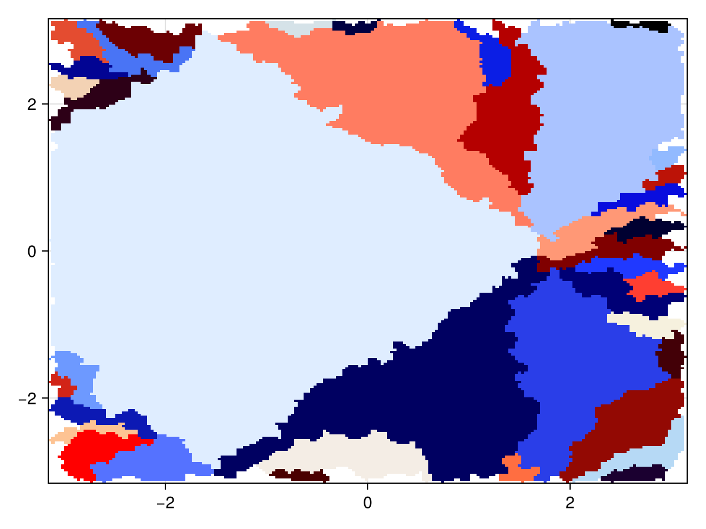
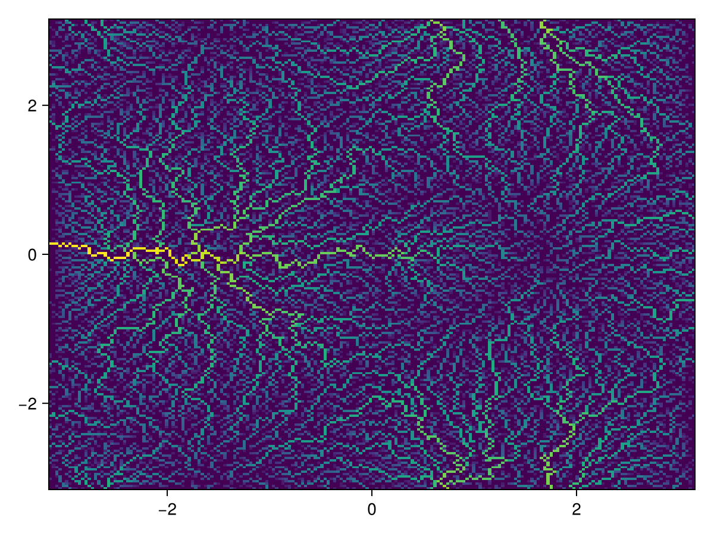

Tutorial
This tutorial walks through a complete flow-routing analysis on a synthetic DEM.
Package loading
using WhereTheWaterFlows, CairoMakie
using Random; Random.seed!(42)Random.TaskLocalRNG()Build a synthetic DEM
We use a function that produces a landscape with a few hills, valleys, and a deliberate closed depression (pit):
function peaks2(n=100, randfac=0.05)
coords = range(-π, π, length=n)
return coords, coords,
sin.(coords) .* cos.(coords') .-
0.7 .* (sin.(coords .+ 1) .* cos.(coords')).^8 .+
randfac .* randn(n, n)
end
x, y, dem = peaks2(200)
heatmap(x, y, dem; axis=(title="DEM",))
Run the flow router
(; area, slen, dir, nout, nin, sinks, pits, c, bnds) = waterflows(dem)waterflows returns a NamedTuple with the following fields:
| Name | Description |
|---|---|
area | Upslope area at each cell (cell count, or physical flux if input cellarea is supplied) |
slen | Stream length: number of cells from the farthest upstream source |
dir | D8 flow direction at each cell. Values 1–4 and 6–9 are active flow directions; 5 (PIT) means the cell is a local minimum with no outflow; 10 (SINK) means flow exits the domain here; 11 (BARRIER) marks NaN/inactive cells |
nout | true if the cell has a downstream neighbour; false for pits, sinks, and barriers |
nin | Number of upstream neighbours flowing into each cell (0–8) |
sinks | Cells where flow exits the domain (boundary, NaN-adjacent, or extra_sinks) |
pits | List of undrained interior local minima after routing. Empty when drain_pits=true (the default) as then all the pits are drained. Indexed starting at length(sinks)+1 |
c | Integer catchment map. 0 = barrier/NaN cell; 1:length(sinks) = sink catchments; length(sinks)+1:end = pit catchments |
bnds | Boundary-cell lists for pit catchments, one vector per pit, co-indexed with pits |
flowdir_extra_output | Extra output from a custom flowdir_fn; nothing for the default d8dir_feature |
Terminology and special cells
waterflows distinguishes between several special cell types:
- NaN cells (
dir == BARRIER): the DEM value isNaN. No routing is performed on these cells and theircellareacontribution is ignored. - Sinks (
dir == SINK): cells where flow leaves the active domain. By default this includes all domain boundary cells (bnd_as_sink=true) and cells adjacent to NaN values (nan_as_sink=true). Additional sinks can be specified viaextra_sinks. - Pits (
dir == PIT): interior local minima that have no lower neighbouring cell under the D8 rule. Withdrain_pits=true(the default) the algorithm routes flow over the lowest spillway of each pit, so the returnedpitsvector is typically empty.
Positional arguments of waterflows
The simplest usage is:
waterflows(dem)An additional positional argument can be used to route physical fluxes:
waterflows(dem, cellarea)| Argument | Meaning |
|---|---|
dem | Elevation or hydraulic-potential array used to determine flow directions |
cellarea | Source term accumulated downstream, by default 1. See Routing physical fluxes. |
Keyword arguments of waterflows
| Keyword | Default | Meaning |
|---|---|---|
drain_pits | true | Route water through pits via the lowest spillway |
bnd_as_sink | true | Domain-boundary cells act as sinks |
nan_as_sink | true | Cells adjacent to NaN DEM values become sinks |
extra_sinks | CartesianIndex{2}[] | Additional cells that act as sinks |
extra_barriers | CartesianIndex{2}[] | Additional cells that act as barriers and do not conduct flow |
stacksize | 2^13 * 2^10 | Call-stack size hint used by recursive routing internals |
feedback_fn | nothing | Applied to accumulated area before routing downstream |
flowdir_fn | d8dir_feature | Function used to compute flow directions. The default is d8dir_feature |
The two last listed keyword-args are advanced features: See Feedback Functionality for process-coupled examples using feedback_fn.
Upslope area
plt_area plots the log₁₀ upslope area. Sink locations are marked in red (all of the domain boundary).
plt_area(x, y, area; sinks)
Catchments
plt_catchments colours each catchment uniquely. Catchments smaller than minsize cells not plotted.
plt_catchments(x, y, c; minsize=50)
Delineate a single catchment
Pick the cell with the largest upslope area along row 50 and trace everything draining into it:
i = 50
j = findmax(area[i, :])[2]
cc = catchment(dir, CartesianIndex(i, j))
fig, ax, _ = heatmap(x, y, Float64.(cc))
scatter!(ax, [x[i]], [y[j]]; color=:red, markersize=15)
fig
Delineate the catchment upstream of a box
Pass a CartesianIndices rectangle to catchment to collect every cell draining into that region:
box = CartesianIndices((90:110, 90:110))
cc2 = Float64.(catchment(dir, box))
cc2[box] .= NaN
heatmap(x, y, cc2)
Note that any collection of cells, passed in as a list of CartesianIndex, can serve to delineate a catchment.
Fill depressions
After waterflows with drain_pits=true (the default), flow crosses depressions (via a breach-type approach). fill_dem raises each pit cell to its spillway elevation, useful for visualising lake depth:
demf = fill_dem(dem, sinks, dir)
heatmap(x, y, demf .- dem; colormap=:blues, axis=(title="Lake depth",))
Routing physical fluxes
Set cellarea to a physical value (e.g. precipitation in m³/s per cell) to accumulate real fluxes rather than cell counts:
precip = 1e-3 .* ones(size(dem)) # uniform 1 mm/s
discharge = waterflows(dem, precip).area
plt_area(x, y, discharge)
Note that because waterflows does not know the cell area, cellarea has to be set to the input into a cell, e.g. m³/s, and not an input per unit area, e.g. m/s. I.e. cellarea needs to be an extensive quantity.
Routing multiple quantities simultaneously
Pass a tuple of arrays as cellarea to accumulate several quantities at once. All quantities must be extensive (additive), e.g. energy not temperature. Here we route uniformly input water alongside a tracer injected into a single cell:
water = ones(size(dem))
tracer = zeros(size(dem))
tracer[40, 40] = 1.0 # single-cell source
(water_area, tracer_area), = waterflows(dem, (water, tracer))
fig = Figure()
heatmap(fig[1, 1], x, y, log10.(water_area); colormap=:blues, axis=(title="Water (log₁₀)",))
heatmap(fig[1, 2], x, y, tracer_area; colormap=:reds, axis=(title="Tracer",))
fig
Next steps
- Use Feedback Functionality to couple transport laws or source-sink processes to routing.
- Use Subglacially for hydraulic-potential based subglacial workflows.
- Use Randomly for uncertainty propagation and Monte Carlo aggregation.